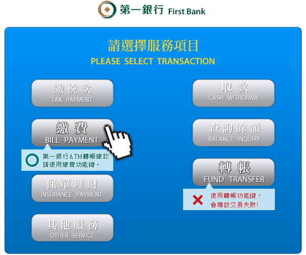
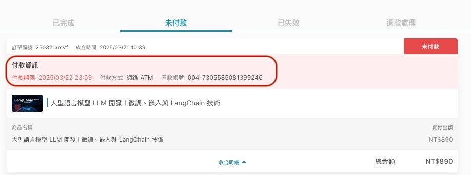

HiSKIO 透過第三方支付服務平台「統一金流、Stripe、PayPal、信用卡分期、超商代碼（僅限台灣）、ATM 付款（僅限台灣）」進行收款，付款方式相當多元便利。
當你繳款後收到購買完成通知時，代表課程的付費部分完成，課程即將開通。
信用卡一次付清
支援的卡別：
- VISA
- MasterCard
- JCB
- 銀聯
信用卡分期
分期付款僅限結帳金額高於新台幣 2,000 元時提供，可分 3 期（滿 2,000 元）／ 6 期（滿 2,500 元）零利率，
目前提供以下銀行：
- 國泰世華商業銀行
- 中國信託商業銀行
- 玉山商業銀行
- 台新國際商業銀行
- 聯邦商業銀行
- 永豐商業銀行
- 遠東國際商業銀行
- 第一商業銀行
- 滙豐（台灣）商業銀行
- 星展（台灣）商業銀行
⚠️ 上述銀行清單以金流服務商當下實際合作為準。
ATM / Web ATM 轉帳
⚠️ 訂單金額超過 5 萬元時，無法選擇 ATM / Web ATM 轉帳。
若你使用的銀行非以下三家，需自行負擔跨行手續費：
- 臺灣銀行
- 中信銀行
- 國泰世華銀行
若訂單金額超過 3 萬元，請透過 ATM 選擇「繳費」功能進行繳費。完成付款後，約半至一小時內會收到購買完成通知。（每間銀行畫面不同，下圖僅供參考）

超商付款
可選擇於 7-Eleven 進行超商付款，需自行負擔手續費。
⚠️ 訂單金額超過 2 萬元時，無法選擇超商付款。
取得付款代碼並完成付款後，約半至一小時內會收到購買完成通知。詳細超商付款流程請參考 此篇文章。
海外人士付款
若你的所在地不是台灣，可選擇以下方式付款：
- 信用卡一次付清
- 信用卡分期
- 網絡 ATM
若信用卡刷卡不成功，可能是你的卡片尚未開通「海外線上支付」功能，請聯繫信用卡公司協助開通。
如果上述都不便，也可以使用「超商付款」——取得超商付款編號後，請台灣的朋友協助臨櫃付款。
繳費期限過了怎麼辦？
超過繳費期限後，原本的「超商繳費代碼」與「轉帳帳號」都會自動失效。
不必擔心，只要再次進行購買並產生新的訂單，於新的繳費期限內繳費或匯款，就能完成購買。
遺忘繳費資訊怎麼辦？（ATM／超商付款）
如果沒有記下「超商繳費代碼」或「轉帳帳號」，可從以下管道找回：
- 至購課帳號註冊信箱，查收系統寄出的繳款通知，信件主旨為「HiSKIO 超商付款繳款通知」或「HiSKIO ATM 繳款通知」，信件內容即有代碼或帳號。
- 點選右上方「個人頭像」→【訂單紀錄】→ 切換至「未付款」頁籤，即可在付款資訊中找到代碼或帳號。

若信箱沒收到通知，可以至「垃圾信件」或「其他分類」中尋找；或直接重新購買，舊的訂單於繳費期限截止後便會自動取消。
忘記繳費而錯過優惠價，還能取得優惠嗎？
HiSKIO 為求公平，若忘記繳費而錯過優惠價且「優惠期間」已截止，僅能以「再次購買時」的售價購買課程。
請把握優惠，於時限內完成購買手續。詳情請參考 如何判斷優惠連結已過期？。
仍無法解決？
請聯繫客服並提供：
- 註冊時使用的 Email
- 訂單編號（如有）
- 嘗試的付款方式與遇到的錯誤訊息／截圖
更新時間： 07/05/2026